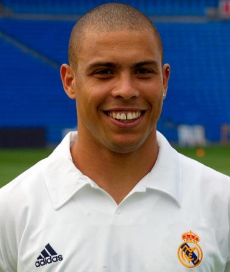

Ronaldo Luiz Nazario de Lima:
born September 22, 1976, Itaguai, Brazil,Brazilian football (soccer) player who led Brazil to a World Cup title in 2002 and who received three Player of the Year awards (1996–97 and 2002) from the Fédération Internationale de Football Association (FIFA). Ronaldo was transferred in 1994 from Cruzeiro to PSV Eindhoven of the Netherlands, where he scored 55 goals in 56 games and won the 1995 league championship and the 1996 Dutch Cup. After switching to FC Barcelona of Spain for the 1996–97 season, he scored 34 goals in 37 appearances and helped his team capture the Spanish Super Cup. Because of his success, Ronaldo was paid $27 million by Inter Milan to play for the Italian club in 1997, a record at the time. At Inter his excellent dribbling skills and knack for scoring goals earned him the nickname “Il Fenomeno.” In 1997 Ronaldo became the first player to win FIFA’s Player of the Year award two years in a row. In 1999, however, he suffered a serious knee injury that left him unable to play for almost two years.
Diego Maradona:
the Argentine who became a national hero as one of soccer’s greatest players, performing with a roguish cunning and extravagant control while pursuing a personal life rife with drug and alcohol abuse and health problems, died on Wednesday in Tigre, Argentina, in Buenos Aires Province. He was 60. At Maradona’s feet, the ball seemed to obey his command like a pet. (He was said to do with an orange what others could only do with a ball.) And he played with a kind of brilliant camouflage, seeming to be somnolent for long stretches before asserting himself at urgent moments with a mesmerizing dribble, astounding pass or stabbing shot.“Brazen and shameless, Maradona was all mock innocence, talking about the ‘hand of God,’” Brian Glanville wrote in his book “The History of the World Cup.” “For England, rather, it was the hand of the devil.” Four minutes later, Maradona scored again, eventually giving Argentina a 2-1 victory.
Cristiano ronaldo:
Portuguese soccer superstar. By 2003 — when he was just 16 years old — Manchester United paid £12 million (over $14 million U.S. dollars) to sign him, a record fee for a player of his age. n the 2004 FA Cup final, Ronaldo scored Manchester's first three goals and helped them capture the championship. He set a franchise record for goals scored in 2008, before Real Madrid paid a record $131 million for his services the following year. Among his many accomplishments, he has won a record-tying five Ballon d'Or awards for player of the year, and led Portugal to an emotional victory in the 2016 European Championship. In July 2018, Ronaldo embarked on a new phase of his career by signing with Italian Serie A club Juventus.
Lionel messi:
soccer player with FC Barcelona and the Argentina national team. He has established records for goals scored and won individual awards en route to worldwide recognition as one of the best players in soccer. Messi steered Barcelona to a wealth of success, most notably in 2009, when the left-footer's team captured the Champions League, La Liga, and Spanish Super Cup titles. That same year, after two consecutive runner-up finishes, he took home his first FIFA "World Player of the Year" honor/Ballon d'Or award.Even the great Maradona gushed about his fellow countryman. "I see him as very similar to me," the retired player told the BBC. "He's a leader and is offering lessons in beautiful football. He has something different than any other player in the world."
Neymar da Silva Santos Junior:
professional Brazilian footballer, who plays as a forward for the national team and French club Paris Saint Germain. Commonly known as Neymar, he was born on 5 February 1992 in Mogi das Cruzes, Brazil. Neymar is regarded as one of the best players of his generation. The versatile attacker is dominant on the left wing but can play on the right wing and as a striker or second striker as well. The Brazilian has 202 club goals from 346 appearances and 53 goals from 83 international caps. In his five-year career with Santos, Neymar scored 70 goals and assisted 35 times in 134 appearances. He led the club to their first Copa Libertadores title in 43 years, during which he also scored the FIFA Goal of the Year and finished the 2012-13 season with a career best total of 43 goals. Neymar Jr. then moved to Spanish club FC Barcelona in May 2013 in reported transfer deal worth 57.1 million euros. The move shaped up the 21-year old’s career, with Neymar developing into a world class player.
Mohamed salah (Egyption king):
Salah plays for Liverpool on a five-year contract running through June 2023 that is heavily incentivized for his performance.In October 2020, Salah scored his 100th goal for Liverpool, becoming the fastest player to do so in club history in the top flight. In December 2020, he became the Liverpool's career leader in Champions League goals.Reds fans celebrate him by singing, "If he scores another few, then I'll be Muslim, too"; he is credited for reducing Islamophobia in Liverpool. didas celebrated his ability to unite people through sport in its "Impossible Is Nothing" campaign and projected him onto the Burj Khalifa's facade. Salah boasts 37 appearances and 21 goals for Egypt. He also competed at the 2012 Summer Olympics in London and netted three times, one in each game of the group stages against Brazil, New Zealand and Belarus.
Robert Lewandowski:
born 21 August 1988) is a Polish professional footballer who plays as a striker for Bundesliga club Bayern Munich and is the captain of the Poland national team. Recognized for his positioning, technique and finishing, Lewandowski is considered one of the best strikers of all time, as well as one of the most successful players in Bundesliga history.[4][5][6] He has scored over 500 senior career goals for club and country.After being the top scorer in the third and second tiers of Polish football with Znicz Pruszków, Lewandowski moved to top-flight Lech Poznań, helping the team win the 2009–10 Ekstraklasa. In 2010, he transferred to Borussia Dortmund, where he won honours including two consecutive Bundesliga titles and the league's top goalscorer award. In 2013, he also featured with Dortmund in the 2013 UEFA Champions League Final. Prior to the start of the 2014–15 season, Lewandowski agreed to join Dortmund's domestic rivals, Bayern Munich, on a free transfer.[8] In Munich, he has won the Bundesliga title in each of his first seven seasons.

Kylian Mbappe:
Kylian Mbappe Lottin is a French professional footballer who plays as a forward for the France National Football Team and Paris Saint-Germain. Mbappe was born on 20 December 1998 in Paris. Mbappe made his debut with the senior Monaco team in the year 2015 against SM Caen. He scored his first goal for the club in the year 2016 at the age of 17 and turned out to be the youngest goalscorer for Monaco. He moved to PSG in 2017. He was signed for a loan from Monaco. He was the second most expensive player to be transferred after Neymar. He scored a goal on his debut for PSG, in a 5–1 Ligue 1 win at Metz. Mbappe played for France in 2017 for the 2018 FIFA World Cup qualification. He was the second youngest player after Maryan Wisnieski to feature in the France national team, at the age of 18. He scored his first senior international goal against the Netherlands in 2018 World Cup qualification.